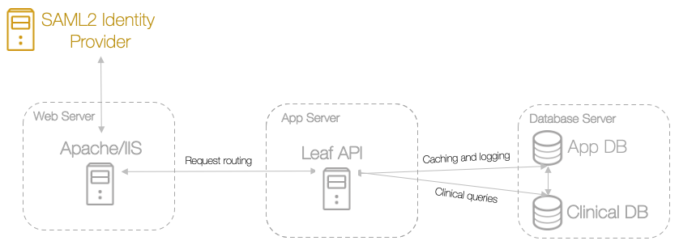

9 - Configure Authentication with SAML2

Leaf delegates support of SAML2 authentication and authorization mechanisms to the various battle-tested and well supported implementations from the open source community (e.g. Shibboleth). We rely on these implementations for integrating Leaf into your environment.
Identity Providers (IdP)
Conceptually, Leaf does not depend concretely on any specific method of authentication. Instead, it only requires the following structured data be written to the request headers:
- A scoped identity of the form "<identity>@<scope>".
- A set of entitlements or group memberships in the form of a character delimited list.
Two well known IdP implementations that we've interacted with are:
For example:
-
UW's Shibboleth IdP sends:
- The
eppnattribute with a value ofjohndoe@washington.edu. - The
gws_groupsattribute with a value ofurn:mace:washington.edu:groups:uw_iths_it; urn:mace:washington.edu:groups:uw_rit_leaf_admins; urn:mace:washington.edu:groups:uw_rit_leaf_users
- The
-
UW Medicine's ADFS IdP sends:
- The
sAMAccountNameattribute with a value ofjohndoe@amc.uwmedicine.org. - The
amc_groupsattribute with a value ofam_leaf_users; am_leaf_admins; amSQL_RIT_Leaf_Admin
- The
Service Providers (SP)
There are multiple implementations of the Service Provider role in the SAML2 protocol, but as we have only ever used Shibboleth and as such will refer to that in the following documentation.
Route Protection Setup
There are only two routes that must be protected by the SAML2 Service Provider (SP), all other routes are protected by requiring a JWT that can only be generated from a SAML2 SP protected endpoint.
/--> React client app./api/config--> Initial API check endpoint./api/user--> Token generation endpoint.
In a non-federated deployment, you can also elect to protect the entire API surface.
Caution: If you are running Leaf's React application at the root of an IIS Server (e.g. leaf.uwmedicine.org instead of leaf.uwmedicine.org/leaf), make sure to make leaf.uwmedicine.org/leafApi unprotected also.
Protecting the root of the React app leaf.uwmedicine.org in Shibboleth will automatically make all sub paths protected. If exceptions are only made for requests with the /api path (except for /api/config and /api/user/, noted above), once the URL Rewrite rule changes the request to the /leafApi path, Shibboleth will intercept this request and not allow the React App to call the API. This will break the application.
Web Servers
IIS
IIS requires a specific ISAPI element within the InProcess element. Additionally, .NET Core does not support server variables and so the IdP provided user attributes must be written to the request headers. A prototypical IIS InProcess element looks like:
<InProcess>
...additional configuration
<ISAPI normalizeRequest="true" safeHeaderNames="true" useHeaders="true">
<Site id="1" name="<server>.<subdomain>.<your_institution>.<tld>"/>
</ISAPI>
</InProcess>
Apache
There is no extra Shibboleth Service Provider configuration required to interoperate with Apache.
ADFS
Shibboleth Service Provider 3 can be configured to work with ADFS. However, it requires a couple extensions bundled with the installation. The extensions are loaded into the OutOfProcess and InProcess elements via the Extensions element. A prototypical ADFS configuration looks like:
<OutOfProcess tranLogFormat="%u|%s|%IDP|%i|%ac|%t|%attr|%n|%b|%E|%S|%SS|%L|%UA|%a">
<Extensions>
<Library path="adfs.so" fatal="true"/>
</Extensions>
</OutOfProcess>
<InProcess>
<Extensions>
<Library path="adfs-lite.so" fatal="true"/>
</Extensions>
...ISAPI configuration if running in IIS
</InProcess>
Shibboleth
There is no extra Shibboleth Service Provider configuration required to interoperate with a Shibboleth IdP.
Examples
IIS/ADFS
Configure Shibboleth SP3 with IIS and ADFS 3.0.
shibboleth2.xml
<SPConfig xmlns="urn:mace:shibboleth:3.0:native:sp:config"
xmlns:conf="urn:mace:shibboleth:3.0:native:sp:config"
clockSkew="180">
<OutOfProcess tranLogFormat="%u|%s|%IDP|%i|%ac|%t|%attr|%n|%b|%E|%S|%SS|%L|%UA|%a">
<Extensions>
<Library path="adfs.so" fatal="true"/>
</Extensions>
</OutOfProcess>
<InProcess>
<Extensions>
<Library path="adfs-lite.so" fatal="true"/>
</Extensions>
<ISAPI normalizeRequest="true" safeHeaderNames="true" useHeaders="true">
<Site id="1" name="<server>.<subdomain>.<institution>.<tld>"/>
</ISAPI>
</InProcess>
<RequestMapper type="Native">
<RequestMap>
<Host name="<server>.<subdomain>.<institution>.<tld>" requireSession="true" authType="shibboleth">
</Host>
</RequestMap>
</RequestMapper>
<ApplicationDefaults entityID="https://<server>.<subdomain>.<institution>.<tld>/shibboleth"
REMOTE_USER="nameID"
cipherSuites="DEFAULT:!EXP:!LOW:!aNULL:!eNULL:!DES:!IDEA:!SEED:!RC4:!3DES:!kRSA:!SSLv2:!SSLv3:!TLSv1:!TLSv1.1">
<Sessions lifetime="28800" timeout="3600" relayState="ss:mem"
checkAddress="false" handlerSSL="true" cookieProps="https">
<SSO id="<idp_abbreviation>" isDefault="true" entityID="<idp_entityID>">
SAML2
</SSO>
<!-- local-only logout. -->
<Logout>Local</Logout>
<!-- Administrative logout. -->
<LogoutInitiator type="Admin" Location="/Logout/Admin" acl="127.0.0.1 ::1" />
<!-- Extension service that generates "approximate" metadata based on SP configuration. -->
<Handler type="MetadataGenerator" Location="/Metadata" signing="false"/>
<!-- Status reporting service. -->
<Handler type="Status" Location="/Status" acl="127.0.0.1 ::1"/>
<!-- Session diagnostic service. -->
<Handler type="Session" Location="/Session" showAttributeValues="false"/>
<!-- JSON feed of discovery information. -->
<Handler type="DiscoveryFeed" Location="/DiscoFeed"/>
</Sessions>
<Errors supportContact="root@localhost"
helpLocation="/about.html"
styleSheet="/shibboleth-sp/main.css"/>
<!-- Example of remotely supplied batch of signed metadata. -->
<MetadataProvider type="XML" validate="true"
url="<idp_metadata_url>"
backingFilePath="federation-metadata.xml" maxRefreshDelay="7200">
</MetadataProvider>
<!-- Map to extract attributes from SAML assertions. -->
<AttributeExtractor type="XML" validate="true" reloadChanges="false" path="attribute-map.xml"/>
<!-- Default filtering policy for recognized attributes, lets other data pass. -->
<AttributeFilter type="XML" validate="true" path="attribute-policy.xml"/>
<!-- Simple file-based resolvers for separate signing/encryption keys. -->
<CredentialResolver type="File" use="signing"
key="sp-signing-key.pem" certificate="sp-signing-cert.pem"/>
<CredentialResolver type="File" use="encryption"
key="sp-encrypt-key.pem" certificate="sp-encrypt-cert.pem"/>
</ApplicationDefaults>
<!-- Policies that determine how to process and authenticate runtime messages. -->
<SecurityPolicyProvider type="XML" validate="true" path="security-policy.xml"/>
<!-- Low-level configuration about protocols and bindings available for use. -->
<ProtocolProvider type="XML" validate="true" reloadChanges="false" path="protocols.xml"/>
</SPConfig>
attribute-map.xml
<Attributes xmlns="urn:mace:shibboleth:2.0:attribute-map" xmlns:xsi="http://www.w3.org/2001/XMLSchema-instance">
<Attribute name="urn:oasis:names:tc:SAML:1.1:nameid-format:unspecified" id="nameID"/>
<Attribute name="http://schemas.microsoft.com/ws/2008/06/identity/claims/role" id="groups" />
</Attributes>
The above example could be highly variable depending on your ADFS IdP set up, and how your relying party's claims are configured.
Apache/Shibboleth
Configure Shibboleth SP3 with Apache and Shibboleth IdP. This example uses InCommon Federation metadata, but would only allow authentication by the specified IdP.
shibboleth2.xml
<SPConfig xmlns="urn:mace:shibboleth:3.0:native:sp:config"
xmlns:conf="urn:mace:shibboleth:3.0:native:sp:config"
clockSkew="180">
<ApplicationDefaults entityID="https://<server>.<subdomain>.<institution>.<tld>/shibboleth"
REMOTE_USER="eppn persistent-id targeted-id">
<Sessions lifetime="28800" timeout="3600" checkAddress="false"
relayState="ss:mem" handlerSSL="true" cookieProps="https">
<SSO id="<abbrev>" isDefault="true" entityID="<IdP supplied entityID>">
SAML2 SAML1
</SSO>
<!-- local-only logout. -->
<Logout>Local</Logout>
<!-- Extension service that generates "approximate" metadata based on SP configuration. -->
<Handler type="MetadataGenerator" Location="/Metadata" signing="false"/>
<!-- Status reporting service. -->
<Handler type="Status" Location="/Status" acl="127.0.0.1 ::1"/>
<!-- Session diagnostic service. -->
<Handler type="Session" Location="/Session" showAttributeValues="true"/>
<!-- JSON feed of discovery information. -->
<Handler type="DiscoveryFeed" Location="/DiscoFeed" dir="/data/shibds/discofeed"/>
</Sessions>
<Errors supportContact="root@localhost"
helpLocation="/about.html"
styleSheet="/shibboleth-sp/main.css"/>
<MetadataProvider type="XML"
url="http://md.incommon.org/InCommon/InCommon-metadata-idp-only.xml"
backingFilePath="InCommon-metadata-idp-only.xml"
maxRefreshDelay="3600">
<MetadataFilter type="RequireValidUntil" maxValidityInterval="1209600"/>
<MetadataFilter type="Signature"
certificate="/etc/pki/tls/certs/inc-md-cert.pem"/>
<MetadataFilter type="EntityRoleWhiteList">
<RetainedRole>md:IDPSSODescriptor</RetainedRole>
<RetainedRole>md:AttributeAuthorityDescriptor</RetainedRole>
</MetadataFilter>
</MetadataProvider>
<!-- Map to extract attributes from SAML assertions. -->
<AttributeExtractor type="XML" validate="true" reloadChanges="false" path="attribute-map.xml"/>
<!-- Use a SAML query if no attributes are supplied during SSO. -->
<AttributeResolver type="Query" subjectMatch="true"/>
<!-- Default filtering policy for recognized attributes, lets other data pass. -->
<AttributeFilter type="XML" validate="true" path="attribute-policy.xml"/>
<!-- Simple file-based resolver for using a single keypair. -->
<CredentialResolver type="File"
key="/etc/pki/tls/private/leaf.rit.uw.edu-shibd-self.key"
certificate="/etc/pki/tls/certs/leaf.rit.uw.edu-shibd-self.cert" />
</ApplicationDefaults>
<!-- Policies that determine how to process and authenticate runtime messages. -->
<SecurityPolicyProvider type="XML" validate="true" path="security-policy.xml"/>
<!-- Low-level configuration about protocols and bindings available for use. -->
<ProtocolProvider type="XML" validate="true" reloadChanges="false" path="protocols.xml"/>
</SPConfig>
If you've made it this far, awesome! You've successfully configured Leaf to run in your environment.
We promise the next steps are more fun. Next we'll configure Leaf to run queries on your clinical database.
Next: Leaf Administration